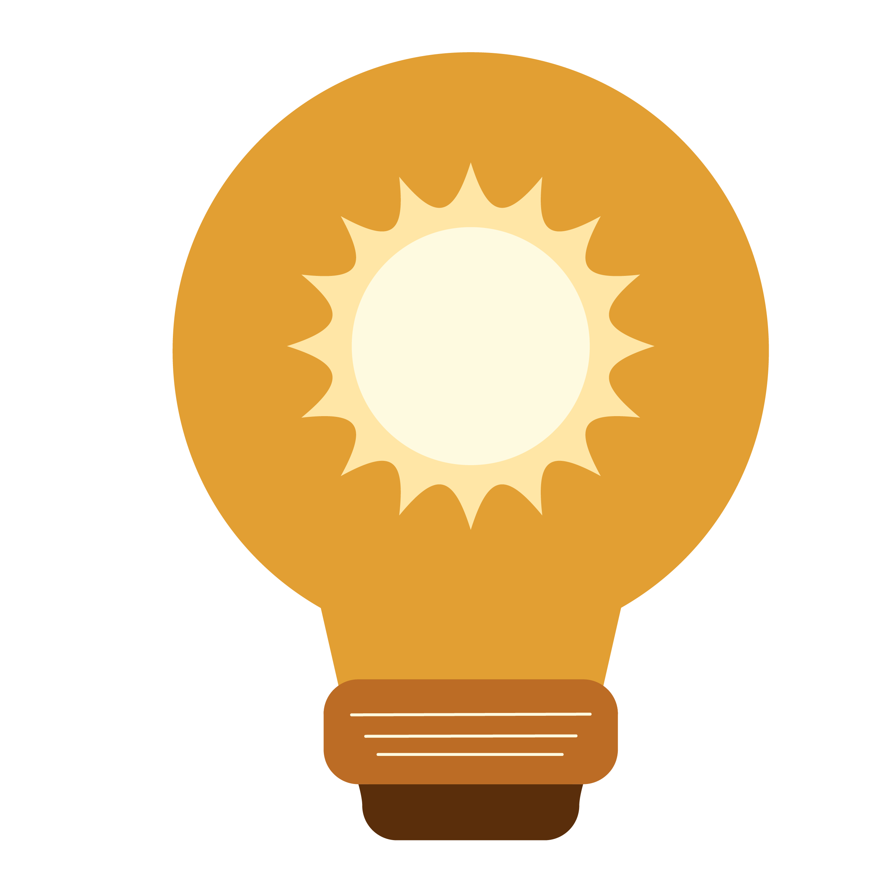

Eficiencia energética
en tus manos.
Auditoría eléctrica inteligente para hogares mexicanos. Monitorea tu consumo, prevén multas por la Tarifa DAC de la CFE y dimensiona sistemas de paneles solares desde tu bolsillo.

El costo de la desinformación
Los consumidores residenciales carecen de herramientas para medir y entender su gasto eléctrico antes de que llegue el recibo.
Tarifa DAC Inesperada
Miles de familias superan el límite de consumo subsidiado, cayendo en la Tarifa Doméstica de Alto Consumo (DAC) y enfrentando recibos impagables.
Desperdicio Lumínico
Uso excesivo de iluminación artificial en espacios donde la luz natural es suficiente, ignorando estándares internacionales de confort visual.
Barrera Renovable
La transición a la energía solar parece compleja y costosa. Las personas no saben cuántos paneles necesitan para mitigar su consumo actual.
Tecnología para tu hogar
Especificaciones técnicas desarrolladas 100% en Flutter para garantizar rendimiento nativo offline.
Auditoría de Electrodomésticos
Cálculo de kWh basado en horas de uso y potencia. Proyección matemática automatizada sobre los costos de la CFE.
Sensor de Luxes
Integración con el hardware del dispositivo para medir luz ambiental comparado en tiempo real con la normativa UNE-EN 12464-1.
Calculadora Fotovoltaica
Dimensionamiento automático de la infraestructura solar basándose en tu consumo real y las 5.0 Horas Solar Pico (HSP) de México.
Impacto Sostenible
Tonalli cuantifica el esfuerzo ciudadano y lo alinea directamente con las metas globales de la ONU.

ODS 11: Ciudades Sostenibles
Fomentamos hogares que consumen energía de forma inteligente, reduciendo la carga en el Sistema Eléctrico Nacional.
ODS 12: Consumo Responsable
Educamos al usuario para aprovechar la luz natural y optimizar sus dispositivos, combatiendo el desperdicio energético diario.
ODS 13: Acción por el Clima
Traducimos la energía ahorrada (kWh) a kilogramos de Dióxido de Carbono (CO₂) evitados utilizando factores de emisión reales (0.527 kg/kWh).